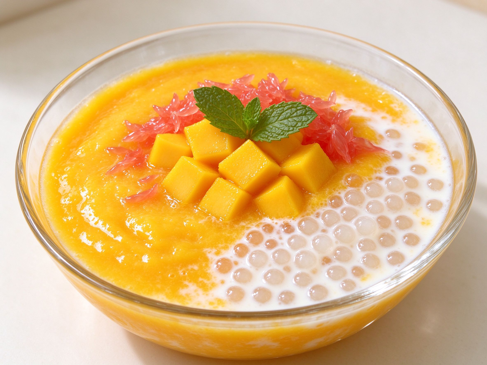

Mango Pomelo Sago: The Cooling Cantonese Dessert That's All About Contrast
In Cantonese restaurants, yang zhi gan lu is the dessert that ends every celebration — a bowl of golden mango puree, chewy sago pearls, juicy mango cubes, and slivers of pomelo, all bound by silky coconut cream. The name means "branches and osmanthus dew," but what you taste is a masterclass in contrast: sweet against bitter, creamy against chewy, cold against bright. It's elegant, make-ahead friendly, and far simpler than it looks.
What Makes It Special
Mango pomelo sago is one of the defining Chinese desserts, and its genius is balance. Ripe mango gives sweetness and body, pomelo adds a clean bitter edge that stops everything from cloying, sago pearls deliver a gentle chew, and coconut cream rounds it all into silk. Every spoonful hits a different note — which is why it disappears fast at any table.
The Ingredients
- Ripe mangoes — 2 large, sweet and fragrant. One for the puree, one for cubed garnish. Honey mango (Ataulfo) works beautifully.
- Sago pearls — 50 g / ¼ cup, small white pearls (not the giant boba).
- Pomelo — a few segments, broken into loose grains. Grapefruit is an easy substitute when pomelo is hard to find.
- Coconut milk — 400 ml / 1¾ cups, full-fat for the creamiest result.
- Milk — 120 ml / ½ cup, for a lighter body.
- Sugar — 2-3 tablespoons, to taste.
The Method
1. Cook the sago
Bring a pot of water to a rolling boil, add the sago, and cook 10-12 minutes, stirring occasionally, until the pearls turn clear with only a pinprick of white in the center. Drain and rinse under cold water to stop the cooking, then set aside in a little cold water so they don't clump.
2. Make the mango puree
Blend one mango with the coconut milk, milk, and sugar until completely smooth. Taste and adjust the sugar — mango sweetness varies a lot.
3. Assemble
In a serving bowl, stir the cooked sago into the mango-coconut base. Fold in the cubed mango and loose pomelo grains, saving a few for the top. Chill for at least 1 hour — the flavors marry and it's best served cold.
4. Finish and serve
Right before serving, top with the reserved mango cubes and pomelo, and if you like, a mint leaf. Spoon it into individual glasses for a restaurant look.
Make-Ahead and Swaps
- Assemble it the night before — it keeps well for a day in the fridge; just hold back the crisp fruit toppings until serving.
- No sago? — tiny tapioca pearls or cooked short-grain rice work in a pinch, though sago gives the right chew.
- No pomelo? — grapefruit is the standard swap; the slight bitterness is the point.
- Dairy-free — use coconut milk for both the base and the milk, or a plant milk — it stays creamy either way, and fits our vegan Chinese cooking too.
Serving It
Serve chilled after a rich meal — it's the perfect cool finish to hot pot night or a dim sum brunch. It also makes an effortless dessert for a crowd: multiply the recipe, layer it into glasses, and let the contrast do the talking. One bowl, four textures, zero fuss — that's Cantonese desserts at their best.